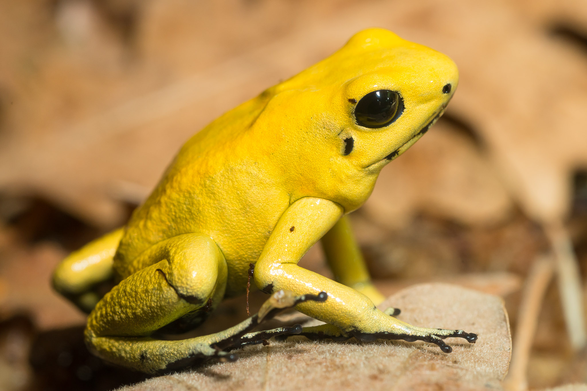

Gouden gifkikker (Phyllobates terribilis)

Plus- en minpunten
+ het gif is heel sterk.
- uitkijken, anders ben jezelf dood
Omschrijving
korte productbeschrijving: Deze kikker, afkomstig uit Colombia, staat bekend om zijn levendige gele kleur. Het gif van deze kikker is een van de krachtigste natuurlijke gifstoffen ter wereld. Slechts een enkele milligram van het gif kan dodelijk zijn voor een mens.